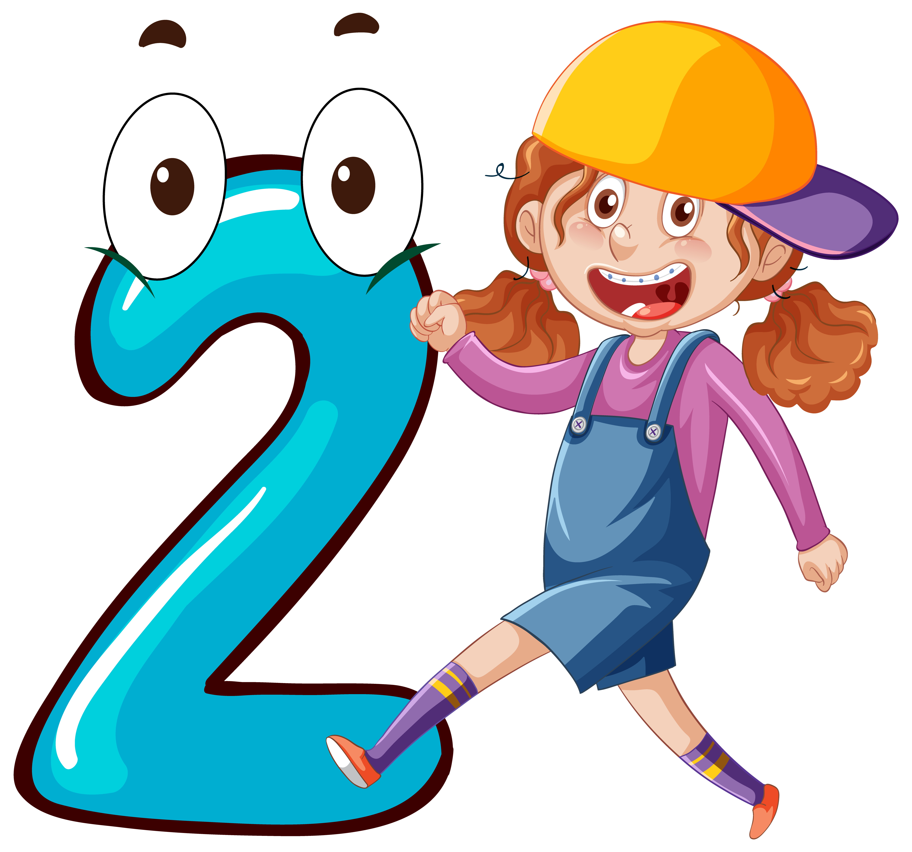

Actividad para explorar
1. Descripción de la actividad
Actividad que permite a los estudiantes explorar y practicar de forma autónoma mediante una simulación en línea sobre residuos sólidos, sustratos, macetas, siembra y manejo de cultivos.

2. Tiempo de ejecución de la actividad
La actividad de aprendizaje se desarrollará a través de una sesión, la cual la cual tendrá una duración de 120 minutos (2 Horas).
3. Desarrollo de la actividad
1. INSTRUCIONES
Los estudiantes deben explorar el simulador digital que se disponen a continuación sobre los temas de tipos de residuos, elaboración de sustratos y elaboración de macetas, posteriormente continuar con el juego interactivo para explorar los diferentes procesos en la siembra y manejo de cultivos en la huerta escolar.
2. DESARROLLO
2.1. SIMULADOR INTERACTIVO
Duración: 60 minutos
Instrucciones: el simulador de la herramienta digital Wordwall permite a los estudiantes realizar diferentes actividades interactivas (ordenar por grupo, cuestionario, abrecajas, rueda aleatoria, cartas al azar y anagramas) que les permite explorar los temas relacionados a la huerta urbana escolar y tener retroalimentación inmediata.
2.1.1. Tipos de residuos
2.1.1.1. Ordenar por grupo
Instrucciones: selecciona, arrastra y ordena las imágenes según el grupo que corresponda (residuos orgánicos o residuos inorgánicos), al finalizar, se debe enviar la respuesta dando click en el botón de la parte inferior central:
2.1.1.2. Anagrama
Instrucciones: selecciona en orden correcto las letras necesarias para descubrir la palabra que esconde cada uno de los siguientes anagramas de residuos orgánicos e inorgánicos, seguidamente use las flechas para continuar con los anagramas:
2.1.2. Elaboración de sustratos
2.1.2.1. Cuestionario
Instrucciones: visualiza la imagen y descripción del elemento que se incluye, posteriormente selecciona si es un material adecuado o inadecuado para la elaboración de un sustrato en la huerta urbana escolar:
2.1.2.2. Abrecajas
Instrucciones: selecciona cada una de las cajas que incluyen a continuación, posteriormente en el limite de tiempo (30 segundos) responde si corresponde a un material adecuado o material inadecuado para la elaboración de un sustrato en la huerta urbana escolar:
2.1.3. Elaboración de macetas
2.1.3.1. Rueda Aleatoria
Instrucciones: haz girar la ruleta hasta que se seleccione un elemento, posteriormente selecciona si es un elemento adecuado o inadecuado para la elaboración de macetas en la huerta urbana escolar:
2.1.3.2. Cartas al azar
Instrucciones: haz click sobre la baraja y revisa cada uno de los elementos que se incluye allí, decidiendo si es adecuado o inadecuado para la elaboración de macetas:
2.2. JUEGO INTERACTIVO
Duración: 30 minutos
Instrucciones: con el uso del juego interactivo denominado como Huerta Escolar Bomba de la herramienta digital de Genially se fomenta la exploración de los procesos de siembra y manejo de cultivos en la huerta urbana escolar, en el cual, los estudiantes aprenden en la medida que exploran y se divierten.
4. Actividad de aprendizaje
1. INSTRUCIONES
Para finalizar la sesión los participantes deben desarrollar la siguiente actividad de evaluación formativa, la cual consiste en completar una prueba dinámica en la plataforma Educaplay denominada como Froggy Jumps con 12 enunciados relacionados a los temas desarrollados en el curso, para ello tendrán un limite de tiempo de 60 segundos (1 minutos) por pregunta y 10 intentos de posibles errores, de igual forma cuenta con retroalimentación inmediata para conocer el nivel de acierto de cada estudiante.
2. DESARROLLO
Duración: 30 minutos
2.1. EVALUACIÓN FORMATIVA